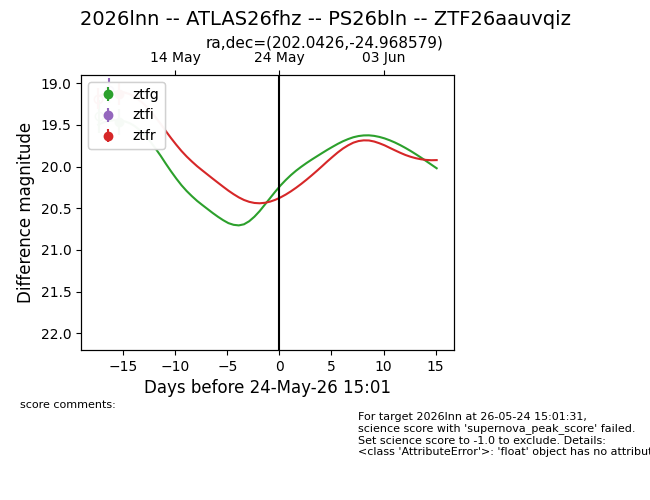
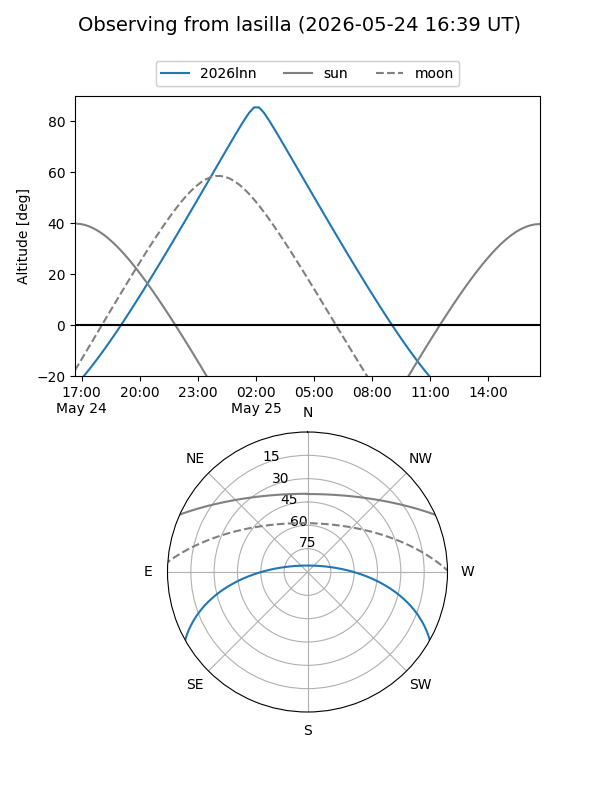
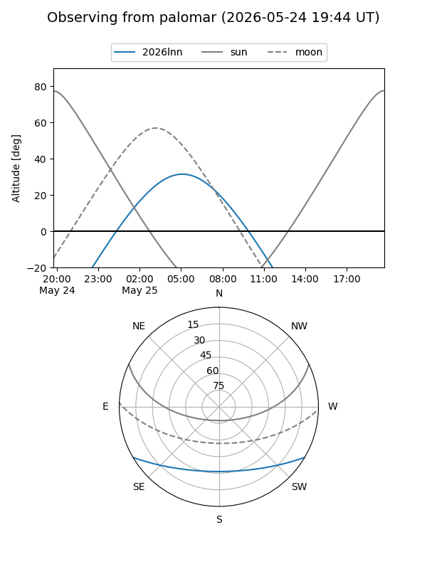
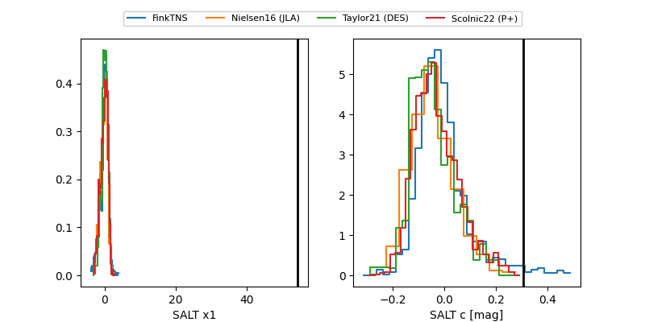

2026lnn
Target 2026lnn at 2026-05-24 15:02
Aliases and brokers:
lsst-FINK: link
lsst-Lasair: link
lsst-ALeRCE: link
ztf-FINK: link
ztf-Lasair: link
ztf-ALeRCE: link
TNS: link
YSE: link
alt names
ZTF26aauvqiz (ztf,fink_ztf)
2026lnn (tns,yse)
ATLAS26fhz (atlas)
PS26bln (panstarrs)
Coordinates:
equatorial (ra, dec) = 202.0426,-24.96858
equatorial (HMS+DMS) = 13:28:10.22,-24:58:06.89
galactic (l, b) = (313.3905,+37.15607)
Flags:
TNS confirmed: nan
Photometry:
last ztfg=19.47, ztfr=19.13
1 ztfg, 1 ztfr detections
Lightcurve

Visibility


Additional plots
